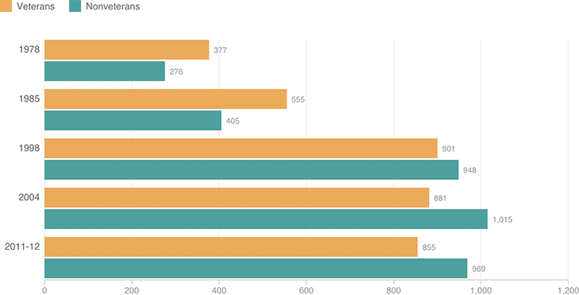

Prison And Jail Incarceration Rates, By Veteran Status
Rate per 100,000 U.S. resident adults

Notes
Rates for nonveterans are based on the number of nonveterans in the U.S. adult resident population. Rates for veterans are based on the number of veterans in the U.S. adult resident population.